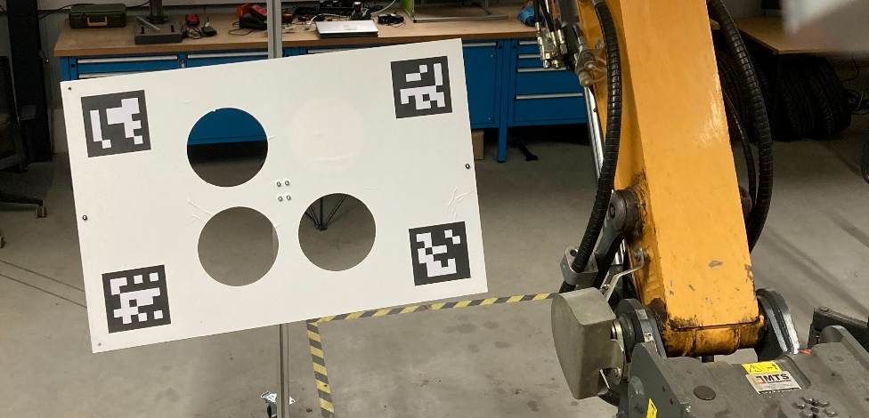

Calibration Target¶
For extrinsic Multi-Sensor Calibration the toolbox was developed to use an asymmetric calibration target as depicted below. The asymmetry allows to detect a full 6-DOF pose of the target within the sensor data, reducing possible ambiguities in the correspondence search and making the calibration process more robust.
 Figure 1: Picture of the asymmetric calibration target used for extrinsic calibration.
The default calibration target used by 'multisensor_calibration' has the following properties:
- Width: 1.2m
-
Height: 0.8m
-
Three Circular Cutouts
- with a Radius: 0.12m
- located plus-minus 0.15m in X-Y direction around the center.
-
Four ArUco Markers from
DICT_6X6_250- with the IDs: 1, 2, 3, 4 (arranged clockwise, starting from top-left)
- with an Edge Length: 0.18m
- located plus-minus 0.05m in X-Y direction from the respective corner of the board
Using a Custom Calibration Target¶
The Multi-Sensor Calibration the toolbox, however, allows to adjust the parameters of the calibration target by editing them within a yaml file: <repository>/mutlisensor_calibration/cfg/TargetWithCirclesAndAruco.yaml
%YAML:1.0
board_width: 1.2 # width of board in meters
board_height: 0.8 # height of board in meters
marker_size: 0.18 # side length of aruco markers in meters
marker_ids: # ids of marker used as a single column matrix
rows: 4
cols: 1
dt: i
data: [1, 2, 3, 4] # marker order goes clockwise, starting from top left of board
marker_positions: # x,y marker positions (top-left) on board relative to center, stored row-by-row in meters. x: rightwards, y: upwards
rows: 4
cols: 2
dt: f
data: [-0.55, 0.35,
0.37, 0.35,
0.37, -0.17,
-0.55, -0.17]
cutouts: # Cutouts (id + parameters) stored as a single row matrix. x: rightwards, y: upwards
rows: 1
cols: 12
dt: f
data: [1, -0.15, 0.15, 0.12, # Circular cutout: (id: 1, parameters: {X,Y,Radius})
1, 0.15, -0.15, 0.12,
1, -0.15, -0.15, 0.12]
min_marker_detection: 2 # minimum number of markers that need to be detected in the camera image
cad_model_mesh: "calibration_target_3holes_cad_mesh.ply" # relative file path to CAD model of the calibration target as mesh
cad_model_cloud: "calibration_target_3holes_cad_cloud.ply" # relative file path to CAD model of the calibration target as cloud
The CAD model mesh/cloud is used for the optimization of the detected target pose by aligning the model data to the segmented point cloud by means of GICP.